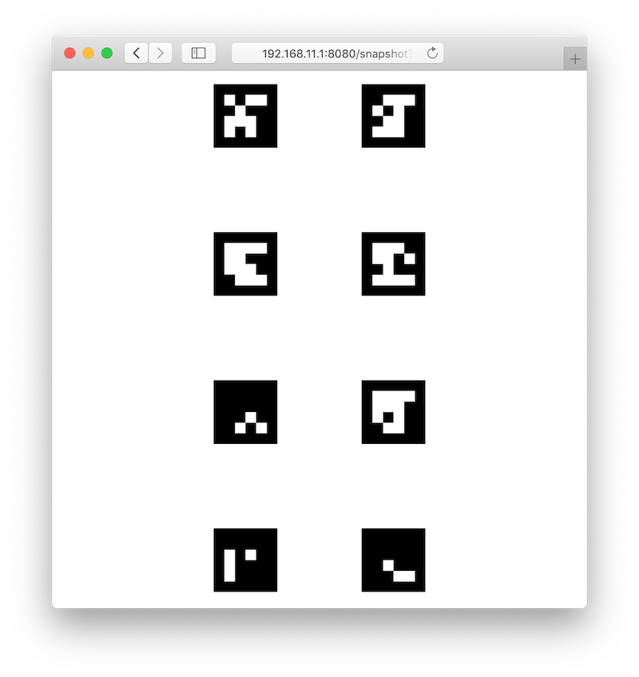
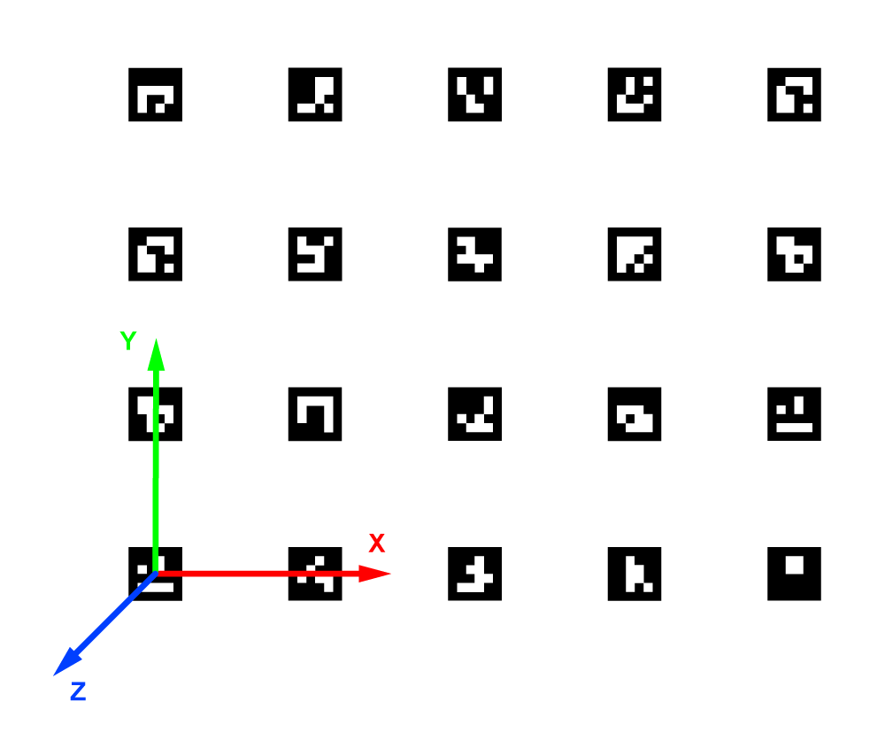
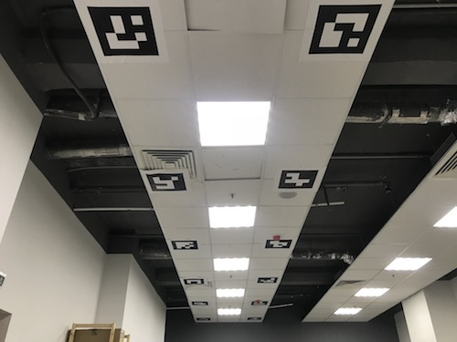

Map-based navigation with ArUco markers
The following applies to image versions 0.22 and up. Older documentation is still available for for version 0.20.
Marker detection requires the camera module to be correctly plugged in and configured.
We recommend using our custom PX4 firmware.
aruco_map module detects whole ArUco-based maps. Map-based navigation is possible using vision position estimate (VPE).
Configuration
Set the aruco argument in ~/catkin_ws/src/clover/clover/launch/clover.launch to true:
<arg name="aruco" default="true"/>
In order to enable map detection set aruco_map and aruco_detect arguments to true in ~/catkin_ws/src/clover/clover/launch/aruco.launch:
<arg name="aruco_detect" default="true"/>
<arg name="aruco_map" default="true"/>
Set aruco_vpe to true to publish detected camera position to the flight controller as VPE data:
<arg name="aruco_vpe" default="true"/>
Marker map definition
Map is defined in a text file; each line has the following format:
marker_id marker_size x y z z_angle y_angle x_angle
N_angle is the angle of rotation along the N axis in radians.
Map files are located at the ~/catkin_ws/src/clover/aruco_pose/map directory. Map file name is defined in the map argument:
<arg name="map" default="map.txt"/>
Some map examples are provided in the directory.
Grid maps may be generated using the genmap.py script:
rosrun aruco_pose genmap.py length x y dist_x dist_y first -o test_map.txt
length is the size of each marker, x is the marker count along the x axis, y is the marker count along the y axis, dist_x is the distance between the centers of adjacent markers along the x axis, dist_y is the distance between the centers of the y axis, first is the ID of the first marker (top left marker, unless --bottom-left is specified), test_map.txt is the name of the generated map file. The optional --bottom-left parameter changes the numbering of markers, making the bottom left marker the first one.
Usage example:
rosrun aruco_pose genmap.py 0.33 2 4 1 1 0 -o test_map.txt
Additional information on the utility can be obtained using -h key: rosrun aruco_pose genmap.py -h.
Checking the map
The currently active map is posted in the /aruco_map/image ROS topic. It can be viewed using web_video_server by opening the following link: http://192.168.11.1:8080/snapshot?topic=/aruco_map/image

Current estimated pose (relative to the detected map) is published in the aruco_map/pose ROS topic. If the VPE is disabled, the aruco_map TF frame is created; otherwise, the aruco_map_detected frame is created instead. Visualization for the current map is also posted in the aruco_map/visualization ROS topic; it may be visualized in rviz.
An easy to understand detected map visualization is posted in the aruco_map/debug ROS topic (live view is available on http://192.168.11.1:8080/stream_viewer?topic=/aruco_map/debug):

Coordinate system
The marker map adheres to the ROS coordinate system convention, using the ENU coordinate system:
- the x axis points to the right side of the map;
- the y axis points to the top side of the map;
- the z axis points outwards from the plane of the marker

VPE setup
In order to enable vision position estimation you should use the following PX4 parameters.
If you're using LPE (SYS_MC_EST_GROUP parameter is set to local_position_estimator,attitude_estimator_q):
LPE_FUSIONshould havevision positionandland detectorflags set. We suggest unsetting thebaroflag for indoor flights.- External heading (yaw) weight:
ATT_W_EXT_HDG= 0.5. - External heading (yaw) mode:
ATT_EXT_HDG_M= 1 (Vision). - Vision position standard deviations:
LPE_VIS_XY= 0.1 m,LPE_VIS_Z= 0.1 m. LPE_VIS_DELAY= 0 sec.
If you're using EKF2 estimator (SYS_MC_EST_GROUP parameter is set to ekf2), make sure the following is set:
EKF2_AID_MASKshould havevision position fusionandvision yaw fusionflags set.- Vision angle observations noise:
EKF2_EVA_NOISE= 0.1 rad. - Vision position observations noise:
EKF2_EVP_NOISE= 0.1 m. EKF2_EV_DELAY= 0.
We recommend using LPE for marker-based navigation.
You may use the selfcheck.py utility to check your settings.
In order to use LPE with the Pixhawk v1 hardware you should download the
px4fmu-v2_lpe.px4firmware
Flight
If the setup is done correctly, the drone will hold its position in POSCTL and OFFBOARD flight modes automatically.
You will also be able to use navigate, set_position and set_velocity ROS services for autonomous flights. In order to fly to a specific coordinate within the ArUco map you should use the aruco_map frame:
# Takeoff should be performed in the "body" frame; "aruco_map" frame will appear as soon as the drone detects the marker field
navigate(x=0, y=0, z=2, frame_id='body', speed=0.5, auto_arm=True) # Takeoff and hover 2 metres above the ground
time.sleep(5)
# Fly to the (2, 2) point on the marker field while being 2 metres above it
navigate(x=2, y=2, z=2, speed=1, frame_id='aruco_map')
Using a specific marker frame
Starting with the image version 0.18, the drone also can fly relative to a marker in the map, even if it is not currently visible. Like with single-marker navigation, this works by setting the frame_id parameter to aruco_ID, where ID is the desired marker number.
The following code will move the drone to the point 1 meter above the center of marker 5:
navigate(frame_id='aruco_5', x=0, y=0, z=1)
Additional settings
If the drone's position is not stable when VPE is used, try increasing the P term in the velocity PID regulator: increase the MPC_XY_VEL_P and MPC_Z_VEL_P parameters.
If the drone's altitude is not stable, try increasing the MPC_Z_VEL_P parameter and adjusting hover thrust via MPC_THR_HOVER.
Placing markers on the ceiling

In order to navigate using markers on the ceiling, mount the onboard camera so that it points up and adjust the camera frame accordingly.
You should also set the placement parameter to ceiling in ~/catkin_ws/src/clover/clover/launch/aruco.launch:
<arg name="placement" default="ceiling"/>
With such a camera orientation the Optical Flow technology cannot work, so it should be disabled in the ~/catkin_ws/src/clover/clover/launch/clover.launch file:
<arg name="optical_flow" default="false"/>
Such setup will flip the aruco_map frame (making its z axis point downward). Thus, in order to fly 2 metres below ceiling, the z argument for the navigate service should be set to 2:
navigate(x=1, y=1.1, z=2, speed=0.5, frame_id='aruco_map')